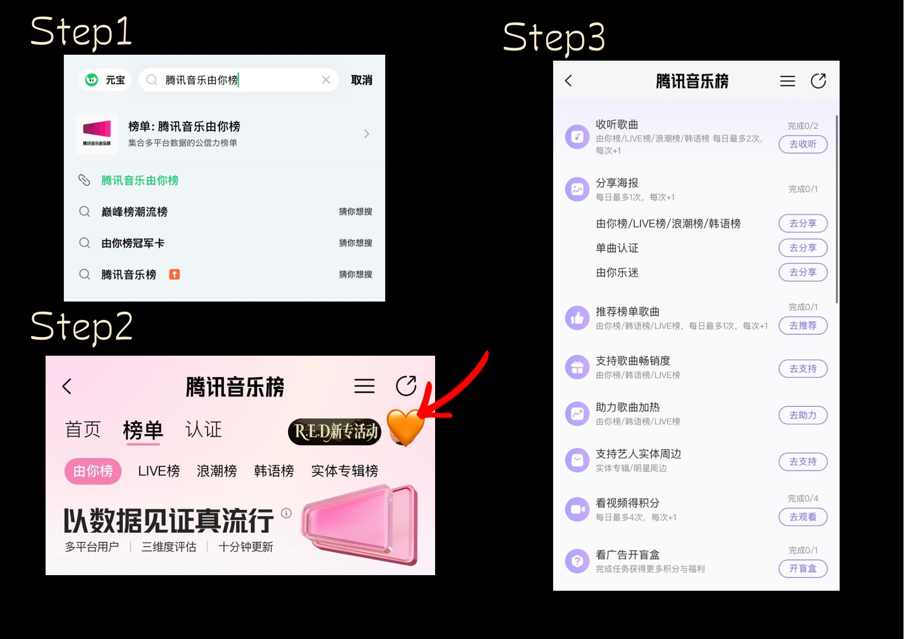
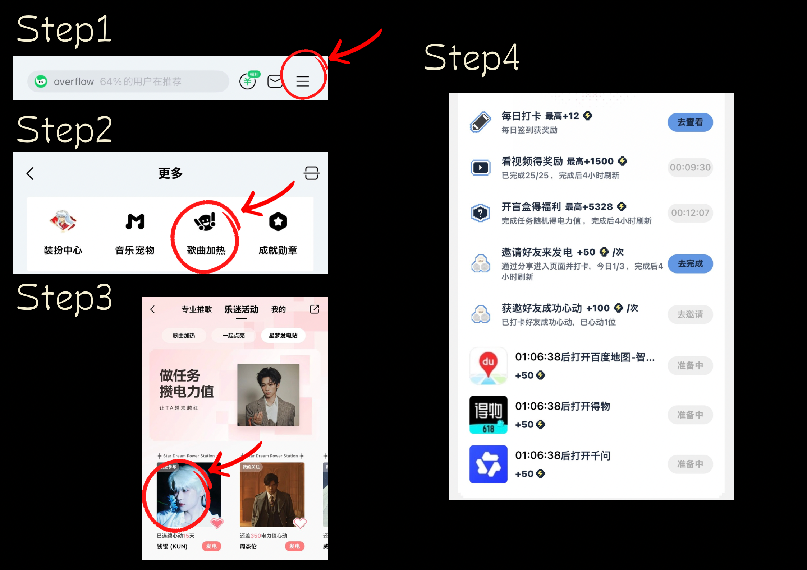
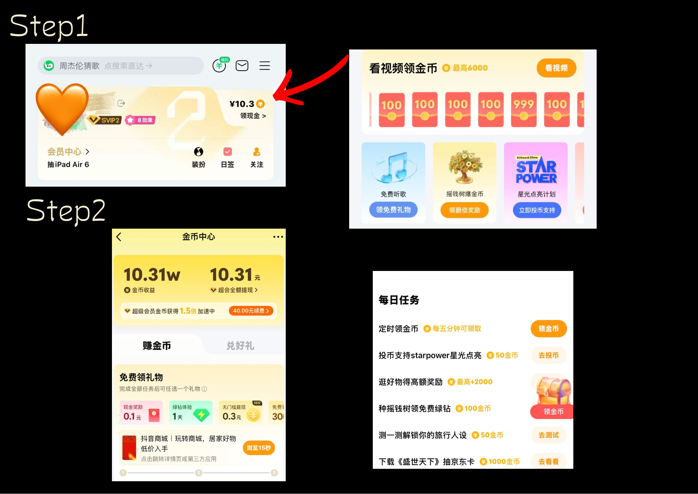
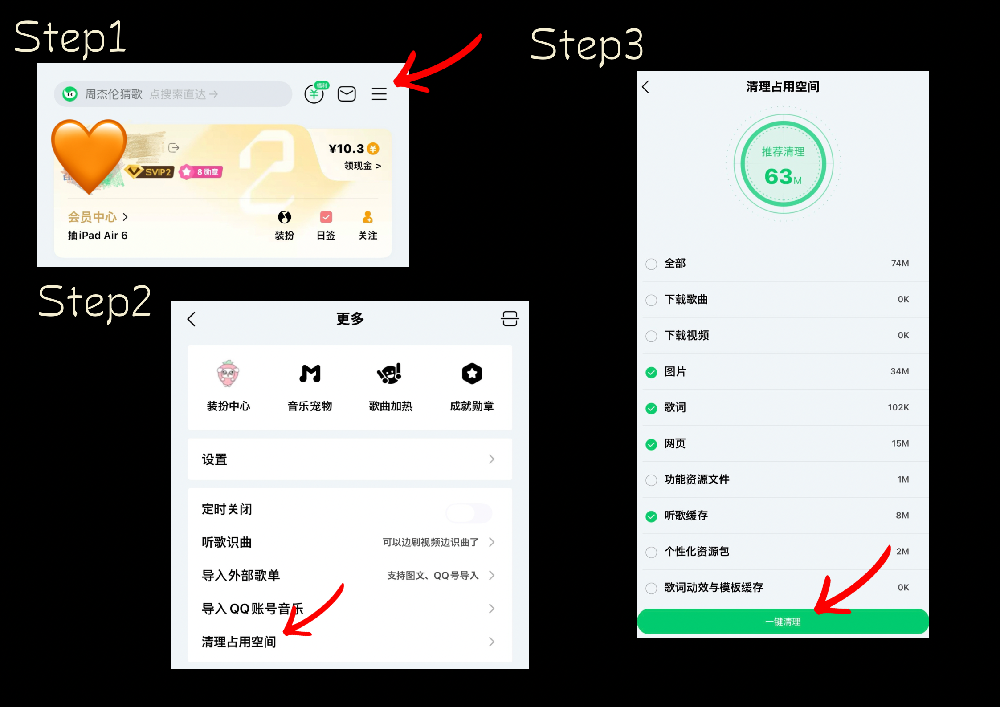
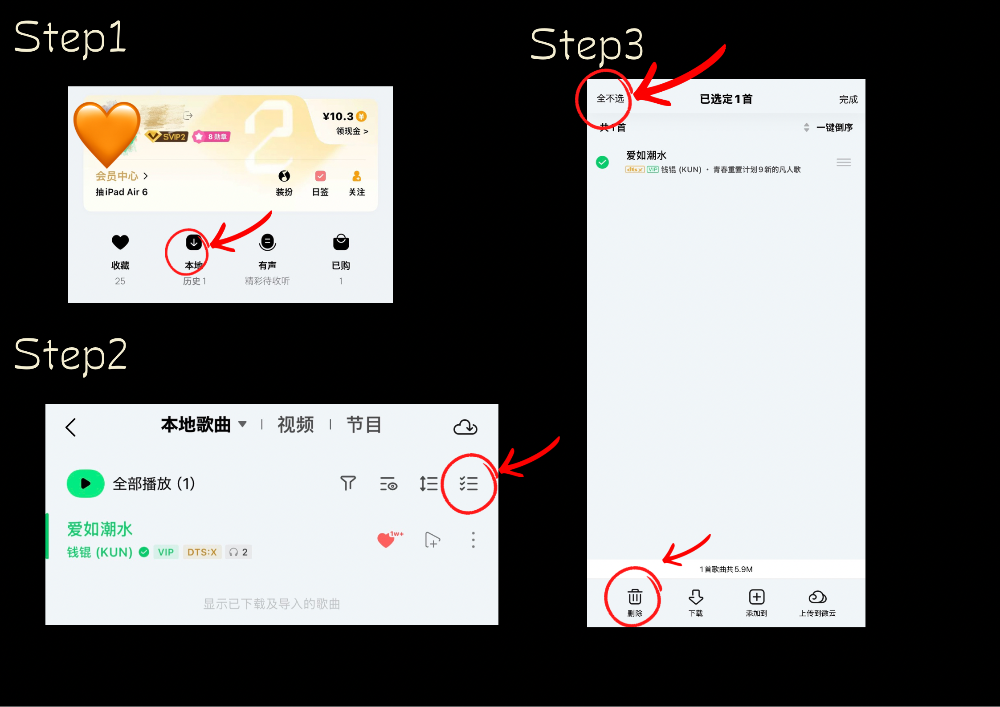
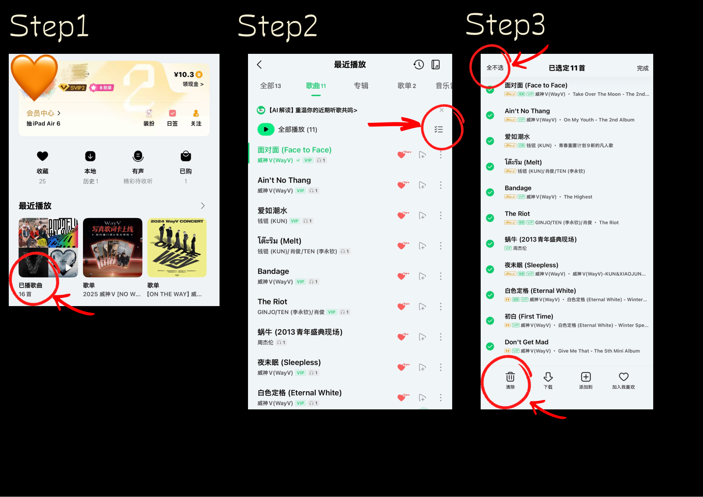
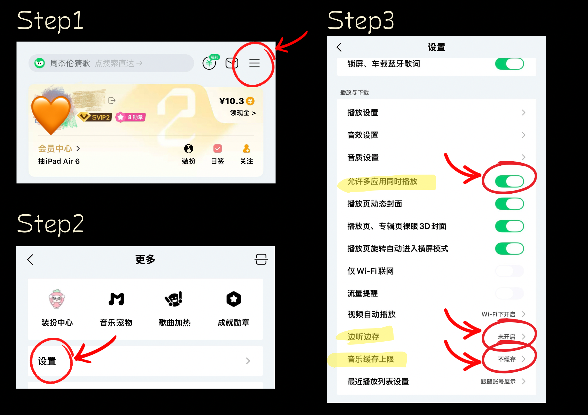

Complete all tasks one by one. Once finished, switch to your next account and repeat the process.


After completing the tasks, switch to your next account and repeat.
Earn coins that can be used to purchase the song.
1 song purchase = 2 RMB ≈ 14,000 coins
Complete ads and available tasks to earn coins.

One phone number can register:



